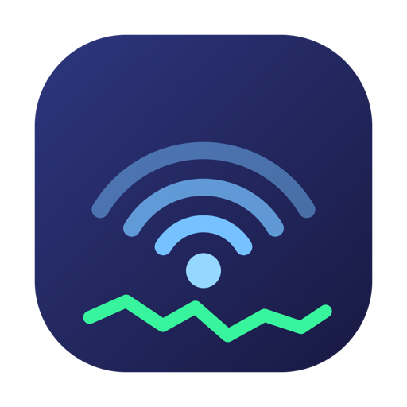

Privacy Policy · Last updated 5 September 2026
WifiHigh5 does not collect, transmit or share any data. There are no accounts, no analytics, no crash reporting and no advertising.
Everything the app shows is read from the Mac it is running on:
Two things, both on your Mac only, inside the app's sandbox container:
You can delete either at any time from within the app. Neither is uploaded anywhere, and the developer has no access to them.
macOS classifies Wi-Fi network names as location data and withholds the network name (SSID) and access point identifier (BSSID) from any app that has not been granted Location Services. The app requests that permission solely to read those two values.
The app never requests your position. No coordinate is ever obtained, stored or transmitted. If you decline the permission the app still works. Only the network name and access point identifier are unavailable.
The app makes no network connections on its own. Two features communicate, both switched off until you enable them and both labelled in the interface:
The hardware manufacturer database is embedded in the app and is never fetched at runtime.
None. The developer cannot see your networks, your saved data or your usage.
The app collects no data from anyone, including children.
Any change to this policy will be published at this address with an updated date.
Questions about this policy can be submitted through the project support page.